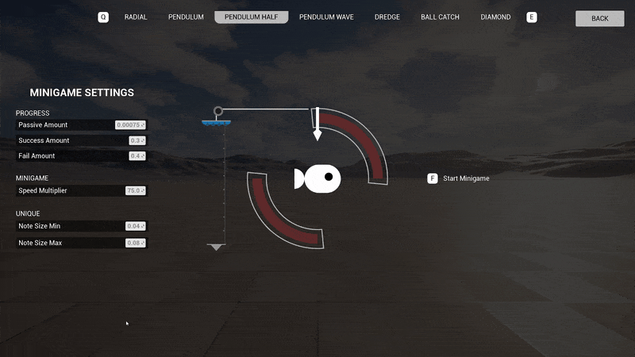
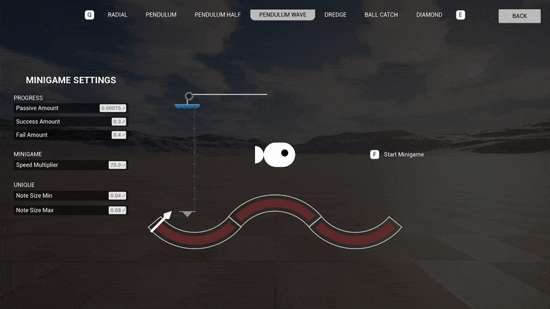
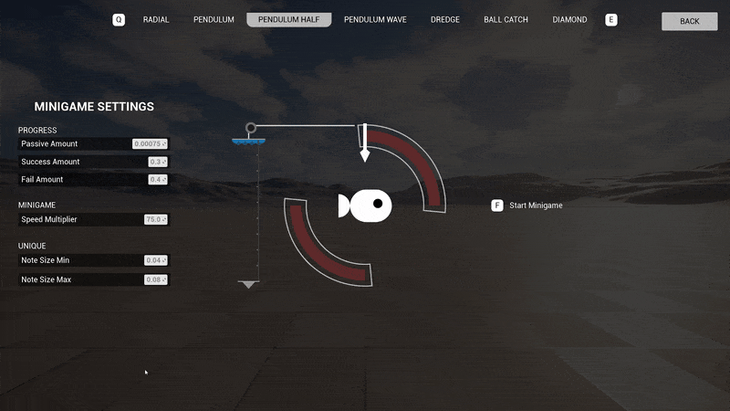
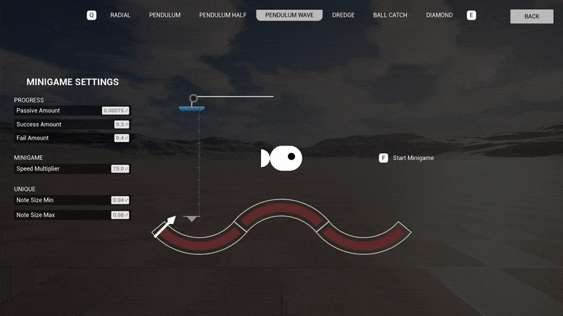
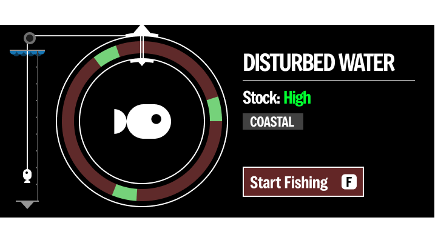
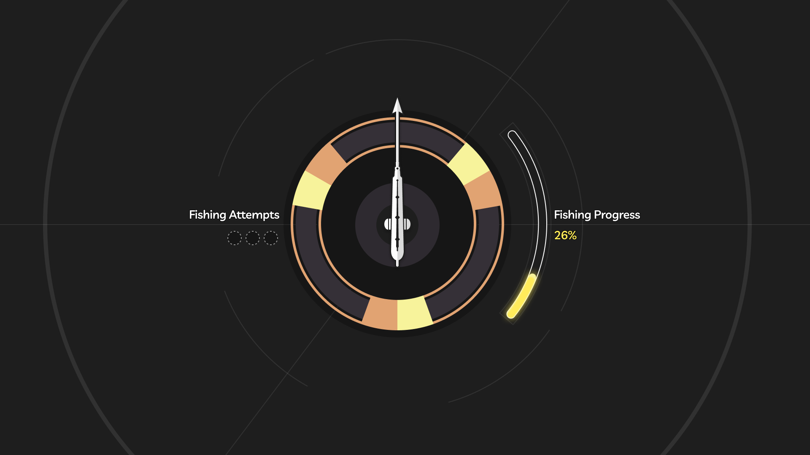
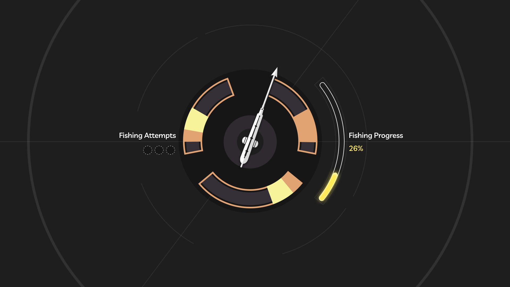
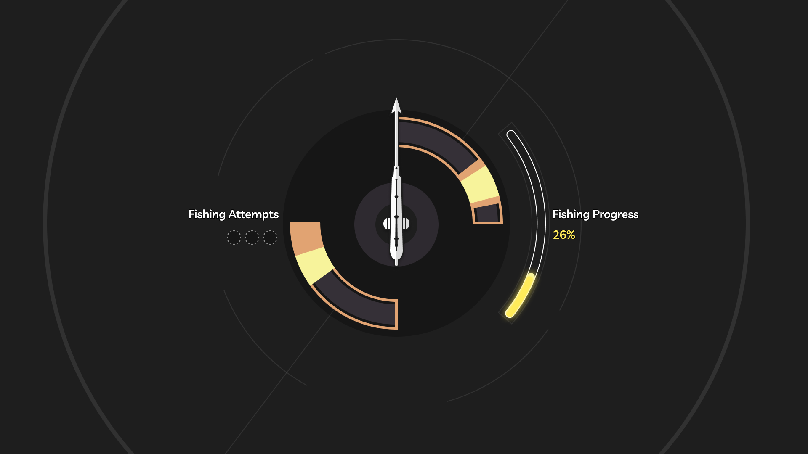
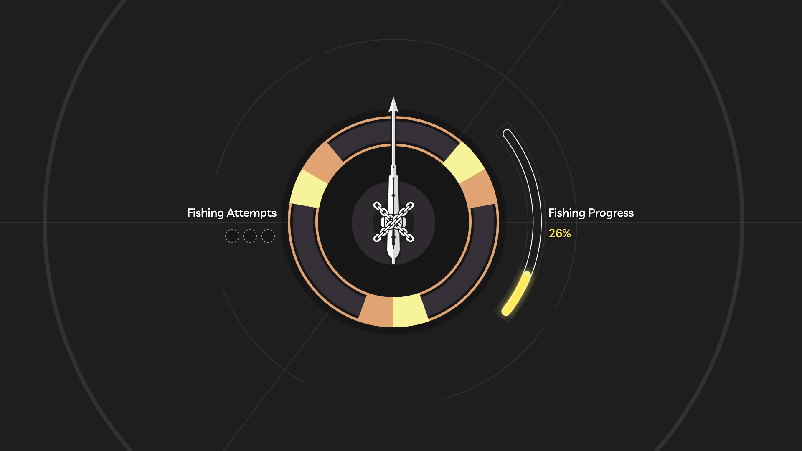

Graduation Project
Solo Project
Engine: Unreal Engine 5
Studied and recreated the fishing mechanic from the game Dredge in Unreal Engine 5. Also took inspiration from Wuthering Waves take on Dredge's fishing.
Highlights:
UI/UX Design
Technical Design
Blueprint scripting

 





DETAILS
UI RECREATION
Dredge
I recreated the UI for all the minigame variants from the base game in Figma. I really love that the fishing line is used for the progress bar.
Wuthering Waves
Wuthering Waves has a similar fishing mechanic to Dredge so I recreated it as well.



